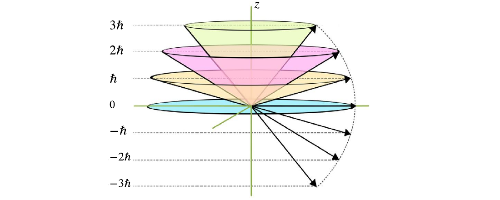

After \(\hat L^2\) and \(\hat L_z\) have definite eigenvalues, the next question is what can still be said about the \(x\) and \(y\) components.
Mean transverse components
Writing \(\hat L_x\) and \(\hat L_y\) through \(\hat L_\pm\), the ladder action makes the relevant inner products proportional to \(\langle l,m|l,m\pm1\rangle\), which vanish.
This result is true for any allowed \(-l\le m\le +l\).
Quadratic averages
The next step is to calculate the quadratic operator. The terms \(\langle \hat L_+^2\rangle\) and \(\langle \hat L_-^2\rangle\) vanish by the same orthogonality argument.
Therefore the angular momentum is not absolutely aligned with the \(z\)-axis, even at maximum projection.
Cone representation

For \(l=3\), the magnitude \(\sqrt{l(l+1)}\hbar\) and projection \(m\hbar\) are definite, while the orthogonal components are not.
Physical consequence
After a measurement of \(L_z\), the value of that component is precise. Since \(L_x\) and \(L_y\) retain finite variances, the angular momentum cannot be pictured as a classical vector pointing in one sharply defined direction.
The cone is a visualization aid: the magnitude \(\sqrt{l(l+1)}\hbar\) and the height \(m\hbar\) are fixed, while any position on the cone surface is equally probable.
Exercise-ready boundary
This page supports guided exercises on: expectation values, transverse variances and the physical cone representation of angular momentum.
Use from this page: the definitions, physical setup, highlighted equations and conceptual links needed for a compact calculation or explanation.
Long-form material: complete proofs, long demonstrations, extended examples and the full exercise set remain in the textbook.
Boundary: do not introduce results, notation or physical claims outside the sequence presented here and in Chapter 6.
Practice anchors
Use these anchors only within the material introduced on this page.
Focus: expectation values, transverse variances and the physical cone representation of angular momentum.
Conceptual check: explain why \(\Delta L_z=0\) does not make \(\Delta L_x\) and \(\Delta L_y\) vanish.